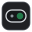
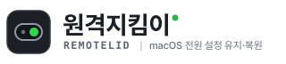

A안 · Mac 상태 표시 중심
추천 기본형
MONO (#202124)

REVERSE (#FCFCFD)
형태 의도: 사용자 참조의 화면 윤곽·중앙 초록 점·하단 받침선만으로 '잠자기 방지·작업 유지'를 나타냅니다.
logo-a.svg / logo-a-reverse.svg
DOCS / BRAND / LOGOS — PREVIEW
BI·VI 기준(docs/brand/DESIGN.md): 선택한 A안은 화면 윤곽과 초록 중앙 점을 사용합니다. 밝은 배경은 흑연색 윤곽, 어두운 배경은 밝은 윤곽을 사용합니다.
A안은 사용자 참조에 맞춰 단순화했습니다. A안 중앙 초록 점은 고정 브랜드 표식이며 실제 앱 상태는 별도 UI에서 확인합니다. B·C는 비교 기록입니다.
형태 의도: 사용자 참조의 화면 윤곽·중앙 초록 점·하단 받침선만으로 '잠자기 방지·작업 유지'를 나타냅니다.
형태 의도: 하단 받침 브래킷(유지)과 상단 복귀 화살표 호(이전 전원 설정 복원)를 결합한 비보안 지킴이 심벌입니다.
형태 의도: '원격지킴이' 한글 이름과 좌측 토글·기준점 보조 심벌을 결합한 워드마크입니다. 보조 심벌 단독 파일도 함께 제공합니다.
C안 워드마크를 16~32픽셀 정사각형 영역에 억지로 넣지 않기 위해 분리한 독립 보조 심벌 파일입니다.

A안은 사용자 참조에 맞춘 수정본이며 logo-a.svg가 웹 기본형입니다. B·C의 초기 상태점 시안은 비교 기록으로 보존합니다.

최소 여백은 심벌 높이의 1/4이며, 16픽셀용 심벌은 실제 디바이스 픽셀 렌더를 검수한 뒤 확정해야 합니다.
| 심벌 종류 | 16×16 px | 24×24 px | 32×32 px | 작은 크기에서의 구조적 제한 (실제 픽셀 렌더 검수 전 유의사항) |
|---|---|---|---|---|
A안 심벌logo-a-mono.svglogo-a-reverse.svg |
|
|
|
메뉴 줄·추가 점·내부 가로선을 제거했습니다. 22×20 비례의 윤곽과 중앙 점을 사용하며, 작은 크기에서는 윤곽과 점이 구분되는지 확인합니다. |
B안 심벌logo-b-mono.svglogo-b-reverse.svg |
|
|
|
16px 축소 시 상단 화살표 날개(`M26.5 6L20 11L26.5 16`)와 좌측 기준점(`cx="16" cy="23"`) 사이 여백이 좁아질 수 있습니다. 실제 픽셀 렌더 검수 전까지 16px 선명성을 단정할 수 없으며, 필요시 화살촉 각도와 점 크기를 단순화해야 합니다. |
C안 보조 심벌logo-c-symbol-mono.svglogo-c-symbol-reverse.svg |
|
|
|
가로형 워드마크(`logo-c-mono.svg`)는 16~32px 정사각형에 넣을 수 없어 보조 심벌(`logo-c-symbol-*.svg`)을 사용합니다. 다만 외부 사각 테두리와 내부 캡슐 트랙의 이중 선 구조가 16px에서는 좁게 겹쳐 보일 수 있어 실제 픽셀 렌더 확인 후 외곽 테두리 생략 여부를 결정해야 합니다. |
로고 자체는 단색(`#202124` 또는 `#FCFCFD`)으로 유지하고, 작동 상태 초록(`#237A4B`)은 별도 UI 상태 배지에만 사용한 구성입니다.